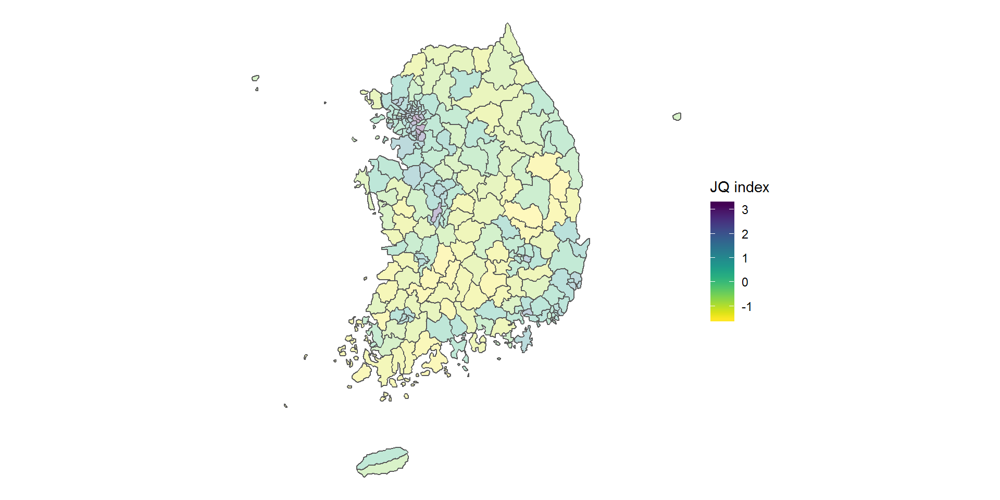
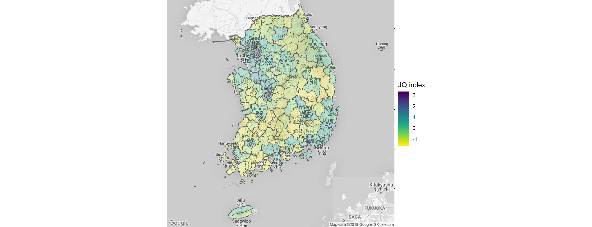
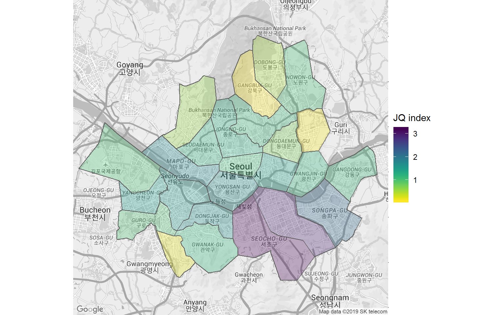

From PDF to Visualization
Summary
- PDF에 있는 정보를 추출할 수 있는 ’플랫폼 중립적’인 방법을 시도해보았다.
- 데이터 프레임의 정보를 지도 위에 표시할 수 있는 ’최신’의 방법을 고민해보았다.
PDF가 최선인가요?
뉴스를 보다가 우연하게 “지역 일자리 지수(LQEI)”라는 걸 보게 되었다. 흥미로운 지표였다. 각 지역별로 일자리의 품질을 측정해 이를 지수 화한 것이었다. 결론은 뻔했다. 서울 공화국, 강남 공화국이다. 어쨌든 숫자를 들여다보는 입장에서 시각화가 되면 좋은 자료라고 생각했는데 기사에 시각화가 별로 였다. 오지랖 호기심이 발동해서 다른 기사를 찾아봐도 시각화의 품질은 그리 좋지 않았다. 원자료를 찾아봤다. 원자료가 PDF) 밖에 없더라. 왜지? 원래 자료가 엑셀 혹은 csv 같은 데이터 파일 포맷으로 되어 있었을 것 같은데, 이걸 왜 굳이 편집을 해서 PDF로 올렸을까 싶었다. 무슨 사연이 있는지 관심이 없다. PDF로 되어 있으면 못할까?
From PDF to TXT
일단 PDF에 있는 자료를 뽑아낼 방법을 알아보았다. R 혹은 Python이든 해당 작업을 수행해주는 라이브러리 혹은 패키지들은 좀 있다. 하지만 어차피 해당 PDF를 표 형태로 깔끔하게 뽑아내기는 힘들다면, 원자료의 정보를 날 것의 형태로 뽑아내는 것이 낫다. R의 경우 pdftools라는 패키지가 있지만, 윈도에서 문제를 일으켰다.
검색을 좀 해보니 .pdf를 .txt로 변경해주는 온라인 서비스들이 좀 있더라. 그중 하나를 이용해서 txt 파일을 만들었다. 추출 시 편의를 위해서 원 PDF에서 자료가 되는 부분만을 잘라서 처리했다. 이제 녀석을 R에서 줄 단위로 읽어서 약간 작업을 하면 꽤 그럴듯한 tibble 혹은 데이터프레임을만들 수 있다. 자세한 것은 리포의 code_munge_2.R 파일을 참고하기 바란다.
From Tibble to Map
지리 정보가 결합된 데이터에 매력을 느끼는 이유는 시각화의 욕구 때문이다. 자료가 행정 구역의 구분을 따르는 경우는 아래 그림과 같은 단계구분도(choropleth)를 많이 쓰게 된다. 단계구분도가 대부분의 사람들이 신문 등의 매체를 통해 가장 많이 접하는 시각화 사례가 아닐까 싶다.

이제 지도 시각화를 구현해보자. 내가 지도를 자주 쓰지 않아서 지도 시각화를 할 때마다 구글의 힘을 빌리게 된다. 그런데, 여기에도 문제가 있다. R이든 Python이든 지도를 시각화하는 여러가지 방법이 있다. 최신 패키지나 기법일수록 대체로 효율적이고 과거에 겪었던 문제를 덜 일으키게 된다. 그런데 이 문제를 검색으로 해결하려다 보면 옛날 기법들이 많이 나온다.
직접 검색을 해보자. 검색어는 “지도 시각화 R”이다. 제일 위에 뜬 글은 링크와 같다. 좋은 글이다! 저자가 공을 많이 들였고, 나도 도움을 많이 받았다. 다만 단계구분도 대목만 놓고 보면 두 가지 걸린다. 우선, 행정 구역을 영역별로 구분해 둔 shp 파일을 데이터프레임으로 만드는데 ggplot::fortify 명령어를 사용했다. 이 명령어는 공간 데이터를 가공할 수 있는 형태로 펴기 위해 ggplot에 들어 갔다. 그런데 최근 들어 같은 일을 더 효율적이면서 일반적으로 수행하는 broom 패키지가 나오면서 broom의 명령어들로 대체되었다. 더구나 공간 관련 데이터를 다루기 위한 더 좋은 전용 패키지도 나왔다. 링크의 튜토리얼에서는 fortify로 풀어헤친 후 gg_polygon 으로 단계구분도를 그렸지만, 데이터를 풀고 합치고 시각화하는 데에는 [sf 패키지]([https://github.com/r-spatial/sf]를 쓰는 편이 더 편하고 빠르다.
Make Choropleth Easy Again!
SHP 파일 준비하기
다시 원래 “지역 일자리 지수”로 돌아가자. 앞서 pdf에서 txt를 거쳐 데이터프레임으로 완성된 데이터를 생성했다. 이를 단계구분도로 시각화하려면 해당 행정구역과 지도를 연결해주는 다른 데이터프레임이 필요하다. shp 파일이 이런 정보를 갖고 있다. 그리고 시기별로 변화한 행정구역별 shp 파일은 고맙게도 한 분이 잘 정리해서 업데이트해주고 계시다.
원자료가 2010년, 2015년 기준으로 찍혀 있으니 이를 고려하여 적절한 shp 파일을 받으면 된다. 다만, 예전 지도의 경우 한반도의 기본 좌표계에 관한 정보를 담고 있는 .prj 파일이 없다. 이건 대충 2017년 이후 파일을 받아서 그 안에 것을 그대로 써도 무방하다. shp 파일을 sf 패키지에서 제공하는 함수인 sf::st_read를 통해서 읽어보자. 일단 행정구역의 라벨과 그 경계 형태를 담고 있는 shp 파일이 R의 친숙한 데이터프레임으로 바뀌었다. 광역 단위 기준의 자료를 보면, 앞에 세 칼럼은 다음과 같다.
| CTPRVN_CD | CTP_ENG_NM | CTP_KOR_NM |
|---|---|---|
| 42 | Gangwon-do | 강원도 |
| 41 | Gyeonggi-do | 경기도 |
| 48 | Gyeongsangnam-do | 경상남도 |
| 47 | Gyeongsangbuk-do | 경상북도 |
| 29 | Gwangju | 광주광역시 |
| 27 | Daegu | 대구광역시 |
| 30 | Daejeon | 대전광역시 |
| 26 | Busan | 부산광역시 |
| 11 | Seoul | 서울특별시 |
| 36 | Sejong-si | 세종특별자치시 |
| 31 | Ulsan | 울산광역시 |
| 28 | Incheon | 인천광역시 |
| 46 | Jeollanam-do | 전라남도 |
| 45 | Jeollabuk-do | 전라북도 |
| 50 | Jeju-do | 제주특별자치도 |
| 44 | Chungcheongnam-do | 충청남도 |
| 43 | Chungcheongbuk-do | 충청북도 |
CTPPRVN_CD는 해당 광역시의 코드이고 나머지는 이름이다. 그리고 나머지 폴리곤 정보는 geometry 칼럼에 뭉쳐서 들어가 있다. R은 마트로시카 인형처럼 데이터프레임 안에 또 다른 R 객체를 마음대로 넣을 수 있다. 이렇게 칼럼이 정리되어 있으면 일단 마음이 편안하다. 한 가지 한글 사용자로서 겪는 불편함은 한글 이름이 깨져 보인다는 것인데, 이는 해당 칼럼의 인코딩을 바꾸면 간단하게 해결된다. 여기서는 아래와 같은 함수로 간단히 해결했다.
change_enc <- function(var_name, df){
#
enq_var_name <- enquo(var_name)
df %>%
mutate(!!enq_var_name := cp_2_utf8(!!enq_var_name))
#
}Prepare tibble()
우리 원자료는 시군 단위까지 나와 있다. 따라서 시각화에 필요한 최종적인 shp 파일은 TL_SCCO_SIG.shp 파일이다. 그러면 광역시 파일은 왜 필요할까? 우리가 갖고 있는 원자료를 떠올려보자. 디지털 파일로 해당 행정구역의 코드를 제공했다면 좋았겠지만, 없다. 그러면 어떻게든 만들어야 한다. 앞서 우리가 만든 원자료는 광역 단위-시군 정보를 갖고 있었다. 그러면 지도 파일에서 해당 이름을 그대로 만들어 그 코드를 가져오면 될 것이다. 이 작업을 위해서 광역 단위 지도를 불러와서 지리 정보(geometry 칼럼)는 버리고 코드와 이름만 남긴다. 우리가 쓸 시군 정보를 보면 코드의 앞 두 자리가 광역단위다. 이 사실을 활용하면 광역 단위-시군 단위의 이름과 코드의 짝을 만들 수 있다. 이 작업이 끝나면 앞서 만든 지역 일자리 지수 데이터프레임에 행정구역 정보가 담긴 geometry 파일을 붙일 수 있다. 요약하면 시각화가 필요한 원래 정보를 담고 있는 데이터프레임과 해당 정보를 행정구역으로 연결하는 것이 핵심이다. 여기서 활용한 전략은 전자를 tibble 혹은 데이터프레임으로 구축하고, 지리 정보만을 담은 후자를 별도의 데이터프레임으로 생성한 후 둘을 결합하는 것이다.
이 tibble만 있어도 이 녀석을 ggplot 객체로 만든 후 그럴듯한 단계구분도를 생성할 수 있다.

shp 파일로 지도를 그려본 사람이라면, 위의 지도가 제법 ’간략’하다는 것을 알아챌 수 있을 것이다. 지도가 자세하면 좋은 점도 있겠지만, 동원되는 지리 정보의 양이 불필요하게 크다는 치명적인 문제가 발생한다. 우리는 한반도의 대략적인 상황이 알고 싶지 (지나치게) 정밀한 지리를 알고 싶은 게 아니다. 지도의 정보를 생략, 압축하는 여러 방법이 있지만 여기서는 해당 지도를 일정 비율로 샘플링해 축약하는 방법을 써보도록 하자. 지도의 정보를 0.25%만 샘플링해보자. 0.25%라는 숫자가 너무 작아 보이지만 이 정도만 해도 우리의 목적에는 충분하다. 위의 지도 정보는 아래의 명령어를 통해서 0.25% 규모로 축약되었다.
ms_simplify(df_sf0, keep = 0.0025, keep_shapes = T)
축약하지 않은 원래 shp 파일이 약 17MB인데 반해 위 지도를 그린 파일은 414 KB에 불과하다.
Map + Choropleth
앞서 소개한 친절한 튜토리얼을 보면 단계구분도를 지도 위에 얹어두었다. 이게 꽤 근사해 보인다. 같은 작업을 해보자. 사실 튜토리얼에 나온 대로 하면 우리 경우는 제대로 구현이 안된다. 지도 시각화는 아직 이런저런 이슈들이 좀 있다. 먼저 지도를 얹기 위해서는 얹을 지도를 생성해야 한다. 구글 지도를 가져오려면 개인별로 API를 발급받아야 한다. 이건 간단하다. 이렇게 API를 발급받으면 ggmap::get_map이라는 함수를 통해 쉽게 한반도의 지도를 가져올 수 있다. 목적에 맞게 크기를 신경 써야 하겠다.
이 지도를 그대로 단계구분도 밑에 깔면 될 것 같지만 그렇게 간단하지 않다. 그 이유를 다 설명하려면 쉽지 않다. 좌간 이 지도를 적당히 잘라내서 밑에 깔 수 있도록 만드는 작업이 필요하다,는 정도만 언급해두자. 함수로 만들어 두었으니 그대로 쓰시면 되겠다. 이 작업을 마치고 좌표계를 통일해주면 지도와 앞서 그렸던 단계구분도를 겹쳐서 그릴 수 있다.

Gang-nam Style?
서울만 한번 그려볼까? 모든 절차는 앞서 와 동일하다. 다만 밑에 깔 맵의 크기를 지정해주고 데이터프레임을 목적에 맞게 필터링하면 된다. 새삼스런 일이지만 일자리가 많은 서울에서도 강남과 강북의 차이는 확연하다.

Files in Repo
리포를 포크, 클론해서 코드를 실행한다면 Rroj 파일로 로드해서 쓰기 바란다.
code_munge_2.R: txt 파일을 적절한 데이터 프레임으로 가공하는 코드code_visual_sf.R: 지도를 생성하는 코드\data: 필요한 데이터 파일들 모음